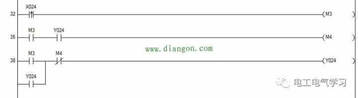

PLC语言
PLC语言种类主要有：
- 梯形图=LD=Ladder Diagram
- 举例：
- 

- 举例：
- 指令表=IL=Instruction List
- 举例：
- 举例：
- 功能模块图=FBD=Function Block Diagram
- 举例：
- 举例：
- 顺序功能流程图=SFC=Sequential Function Charts
- 举例：
- 举例：
- 结构化文本=ST=Structured Text=（典型的计算机）编程语言
- 含义：用结构化的描述文本来描述程序的一种编程语言
- 它是类似于高级语言的一种编程语言
- 特点：
- 采用高级语言进行编程，可以完成较为复杂的控制运算
- 在大中型PLC系统中，常采用结构化文本来描述控制系统中各个变量的关系,完成所需的功能或操作
- 要求较高，需要有一定的计算机高级语言的知识和编程技巧
- 因为直观性和操作性较差，常用于其他编程语言较难实现的用户程序编制
- 采用高级语言进行编程，可以完成较为复杂的控制运算
- 举例：
- 含义：用结构化的描述文本来描述程序的一种编程语言


其他一些特有的PLC语言：
- 西门子的SCL
- =Structured Control Language=结构化控制语言
- 介绍
- 基于PASCAL
- 除了编程语言的基础特点外，还提供了基本指令、扩展指令、工艺指令及通信指令等丰富的指令
- 满足所有PLC控制的要求
- 举例